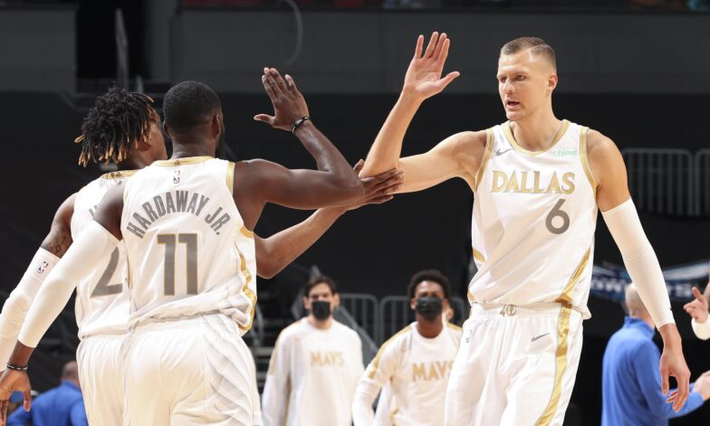

Mavericks feeling better with Kristaps Porzingis back in action
Dallas' talented big man provides the Mavericks with much-needed offense when they need it most.

Kristaps Porzingis made his 2020-21 season debut Wednesday with 16 points in 21 minutes.
Dallas Mavericks forward Kristaps Porzingis made his season debut Wednesday in the team’s 104-93 win over the Charlotte Hornets, performing “exceptionally well given the circumstances” according to coach Rick Carlisle.
"I think everybody feels a lot better now that KP’s back in the mix,” Carlisle said.
That’s partly because the Mavericks came into the game shorthanded, missing Josh Richardson, Jalen Brunson, Dorian Finney-Smith, Dwight Powell and Maxi Kleber as they continue to advance through the NBA’s COVID-19 Health and Safety Protocols.
In a game that Luka Doncic logged a career-high four blocked shots and finished one assist short of another triple-double (34 points, 13 rebounds, 9 assists), Carlisle captured his 800th career win with Porzingis contributing 16 points, 4 rebounds and 2 blocks in 21 minutes.
“I enjoy winning, I enjoy competing. It’s good to be out there,” Porzingis said. “It’s good to be back with my guys, and finally be a part of [it]. When I was out this time, these nine [or] 10 games, I was trying to stay as connected as I could to the team in timeouts and things like that. But, you can only do so much.
“You actually want to be out there with everybody, playing and feel like you’re doing your part. So, today, for the first time, I got that feeling back again. I’m happy about the result, happy to be appreciated. I look forward to the next one.”
Starting the game at power forward, Porzingis knocked down 2 of 3 from deep in the first quarter for six points, as the Mavericks stormed to a 16-point lead after the first quarter on the strength of Doncic’s 11 points.
The instant offense felt as easy to Porzingis as it looked.
“But what I think didn’t help me was knowing that I had the minutes restriction,” Porzingis said. “So, I was trying to do as much as I could in those minutes that I had. Sometimes, you don’t make the best decisions when you really want to be aggressive. It’s O.K. It’s a part of it.
“I wanted to be out there; be aggressive for the time I was gonna be out there. Most importantly, first game and first win for me. Looking forward to the next one, and just getting into a rhythm where everything comes easy and we find that chemistry out there. Then, we’ll take off.”
Porzingis finished the first half shooting 4-of-10 from the field for 10 points. He played just nine minutes in the second half, sinking 2 of 6 (including 2 of 3 from deep) to go with 2 rebounds and 6 points.
“It was great. He’s an amazing player,” Doncic said. “Obviously, it’s his first game. He played, what, 20-something minutes? He’s got to get back into rhythm. For the first game, he played amazing. He’s gonna keep improving and we’re gonna need him a lot.”
Porzingis pointed to past experience in zooming to Wednesday’s fast start against the Hornets, which entered Wednesday’s contest on a four-game winning streak. Remember, Porzingis sat out a season and a half recovering from a torn left ACL suffered in February of 2018, before the October setback in the opener of Dallas’ playoff series against the LA Clippers eventually required surgery to repair a left lateral meniscus injury.
Porzingis averaged 20.4 points, 9.5 rebounds and 2 blocks last season with the Mavericks.
“I’ve been putting in a lot of work while I was out, just shooting, just being on the floor a lot more than when I was coming [back] from [the] ACL [injury],” Porzingis explained. “I was really out of rhythm and I could really tell I was really rusty when I was coming back.
“So, I didn’t want to allow that to happen again this time around. I put in a lot more time on the floor shooting, feeling the ball, things like that. Today, I already felt way better than when I was coming back. All I need now is just that time on the floor. I have the confidence because I have been putting in the work
“Sooner or later, I’ll have those minutes and I’ll just play out there freely, instinctively, and enjoy the game.”
Carlisle, for sure, will be counting the days considering that so many Mavericks are currently advancing through the league’s coronavirus protocols. On a four-game winning streak, including six wins in its last eight outings, Dallas hits the road to face the Milwaukee Bucks on Friday.
“Right now in the world, good health is something that none of us can take for granted whether it’s having to do with a basketball-related rehab and recovery or whether it has to do with something COVID [related],” Carlisle said. “You’ve got two franchise players. It’s important to have them on the floor together and available to play. If you look at every team in this league, if they’re without one of their cornerstone guys it’s gonna be a lot tougher job.”